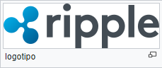

Ripple : XRP
"Protocolo de Pagamento Ripple"
Ripple é um sistema de liquidação bruta em tempo real (RTGS), câmbio e rede de remessas desenvolvido pela Ripple. Também chamado de protocolo Ripple Transaction Protocol (RTXP) ou Ripple,[1] é construído com base em um protocolo de Internet aberto distribuído, um livro-razão de consenso e uma moeda nativa chamada XRP (ondulações). Lançado em 2012, a Ripple pretende permitir "transações financeiras globais seguras, instantâneas e quase gratuitas de qualquer tamanho sem rejeições". Ele suporta tokens representando moeda fiduciária, criptomoeda, commodity ou qualquer outra unidade de valor, como milhas de vôos ou minutos de telefonia móvel. No seu núcleo, o Ripple baseia-se em um banco de dados público compartilhado, que usa um processo de consenso que permite pagamentos, trocas e remessas em um processo distribuído.
Em 2014, Ripple defendeu a segurança de seu algoritmo de consenso contra a rival Stellar Network. Atualmente, Ripple é a terceira maior criptografia por capitalização de mercado, após bitcoin e Ethereum.
Usado por empresas como UniCredit, UBS ou Santander, o protocolo Ripple está sendo cada vez mais adotado pelos bancos e redes de pagamento como tecnologia de infra-estrutura de liquidação, com o American Banker explicando que "a partir da perspectiva dos bancos, os livro-razões distribuídos, como o sistema Ripple, têm uma Número de vantagens sobre criptomoedas como bitcoin", incluindo preço e segurança
História
Desenvolvimento inicial (2004-2012)
O predecessor do protocolo de pagamento Ripple, Ripplepay, foi desenvolvido pela primeira vez em 2004 por Ryan Fugger, desenvolvedor web em Vancouver, British Columbia. Fugger concebeu a ideia depois de trabalhar em um sistema de comércio de câmbio local em Vancouver e sua intenção era criar um sistema monetário descentralizado e efetivamente para permitir que indivíduos e comunidades criassem seu próprio dinheiro. A primeira iteração de Fugger deste sistema, RipplePay.com, estreou em 2005 como um serviço financeiro para fornecer opções de pagamento seguro aos membros de uma comunidade on-line através de uma rede global.
Isso levou à concepção de um novo sistema de Jed McCaleb da rede eDonkey, que foi projetado e construído por Arthur Britto e David Schwartz. Em maio de 2011, eles começaram a desenvolver um sistema de moeda digital em que as transações eram verificadas por consenso entre os membros da rede, em vez do processo de mineração usado pelo bitcoin, que depende da blockchain. Esta nova versão do sistema Ripple foi, portanto, projetada para eliminar a dependência do bitcoin em trocas centralizadas, usar menos eletricidade do que bitcoin e executar transações muito mais rapidamente do que bitcoin. Chris Larsen, que já fundou as empresas de serviços de empréstimos E-Loan e Prosper, se juntou à equipe em agosto de 2012 e, em conjunto, McCaleb e Larsen se aproximaram de Ryan Fugger com sua ideia de moeda digital. Após discussões com membros de longa data da comunidade Ripple, Fugger entregou as rédeas. Em setembro de 2012, a equipe co-fundou a empresa OpenCoin, ou OpenCoin Inc. In September 2012 the team co-founded the corporation OpenCoin, or OpenCoin Inc.
OpenCoin e Ripple Labs (2012-2013)
O OpenCoin começou a desenvolver um novo protocolo de pagamento chamado Ripple Transaction Protocol (RTXP) com base nos conceitos de Ryan Fugger. O protocolo Ripple permite a transferência instantânea e direta de dinheiro entre duas partes. Como tal, o protocolo pode circunavegar as taxas e os tempos de espera do sistema bancário correspondente tradicional, e qualquer tipo de moeda pode ser trocada, incluindo USD, euros, RMB, iene, ouro, milhas aéreas e rúpias. Para manter a segurança, o OpenCoin programou Ripple para confiar em um livro-razão comum que é "gerenciado por uma rede de servidores de validação independentes que comparam constantemente seus registros de transações". Os servidores podem pertencer a qualquer um, incluindo bancos ou fabricantes de mercado. A empresa também criou sua própria forma de moeda digital denominada XRP de forma semelhante ao bitcoin, usando a moeda para permitir que as instituições financeiras transferissem dinheiro com taxas e tempo de espera insignificantes.
Entre os primeiros investidores da OpenCoin estavam Andreessen Horowitz e Google Ventures. Em 1 de julho de 2013, o XRP Fund II, LLC (agora chamado simplesmente XRP II)] foi incorporado como uma subsidiária integral da OpenCoin e sediada na Carolina do Sul. No dia seguinte, a Ripple anunciou a ligação dos protocolos bitcoin e Ripple via Bitcoin Bridge. O Bitcoin Bridge permite aos usuários do Ripple enviar um pagamento em qualquer moeda para um endereço bitcoin. A Ripple também desenvolveu parcerias iniciais com empresas como o ZipZap. Em 26 de setembro de 2013, a OpenCoin Inc. mudou seu nome para Ripple Labs Inc., com o CEO principal Chris Larsen. No mesmo dia, o servidor de referência Ripple e o cliente tornaram-se software livre, lançados como fonte aberta sob os termos da licença ISC. A Ripple Labs continuou como principal contribuinte do código para o sistema de verificação de consenso por trás da Ripple, que pode "integrar-se às redes existentes dos bancos". Em outubro de 2013, a Ripple se associou ainda mais com o ZipZap, com o relacionamento chamado de ameaça para Western Union na imprensa.
Foco no mercado bancário (2014-2017)
Em 2014, a Ripple Labs esteve envolvida em vários projetos de desenvolvimento relacionados ao protocolo, lançando, por exemplo, uma aplicação de cliente iOS para o iPhone que permite que os usuários do iPhone enviem e recebam qualquer moeda através do telefone. Este aplicativo Ripple Client não existe mais. Em julho de 2014, a Ripple Labs propôs a Codius, um projeto para desenvolver um novo sistema de contrato inteligente chamado de "programming language agnostic"
.Desde 2013, o protocolo foi adotado por um número crescente de instituições financeiras para "oferecer uma opção alternativa de remessa" para os consumidores. Ripple permite pagamentos transfronteiriços para clientes de varejo, corporações e outros bancos, e Larsen foi citado afirmando que "Ripple simplifica o processo de troca, criando transferências ponto a ponto e transparentes nas quais os bancos não precisam pagar taxas bancárias correspondentes". O primeiro banco a usar Ripple foi o Fidor Bank em Munique, que anunciou a parceria no início de 2014. O Fidor é um banco totalmente online da Alemanha. Em setembro, o banco Cross River de Nova Jersey e o CBW Bank, com sede em Kansas, anunciaram que estariam usando o protocolo Ripple. Em dezembro, a Ripple Labs começou a trabalhar com o serviço de pagamentos global Earthport, combinando o software Ripple com o sistema de serviços de pagamento da Earthport. Os clientes da Earthport incluem bancos como o Bank of America e o HSBC, e opera em 65 países. A parceria marcou o primeiro uso da rede do protocolo Ripple. Somente em dezembro de 2014, o preço da XRP aumentou mais de 200%, ajudando a Ripple a superar a litecoin para se tornar a segunda maior criptograna e definir a capitalização de mercado da Ripple em cerca de meio bilhão.
Em fevereiro de 2015, o Fidor Bank anunciou que estaria usando o protocolo Ripple para implementar uma nova rede internacional de transferência de dinheiro em tempo real e, no final de abril de 2015, anunciou que a Western Union estava planejando "experimentar" com Ripple No final de maio de 2015, o Commonwealth Bank of Australia anunciou que estaria experimentando com Ripple em relação às transferências intra-bancárias. Desde 2012, representantes da Ripple Labs professaram apoio à regulamentação governamental do mercado de cripto-moeda, alegando que os regulamentos ajudam as empresas a crescer. Em 5 de maio de 2015, a FinCEN multou a Ripple Labs e a XRP II por US $ 700.000 por violação da Lei de Privacidade do Banco, com base nas adições da Financial Crimes Enforcement Network ao ato em 2013. A Ripple Labs concordou com as medidas corretivas para garantir a conformidade futura, que incluiu um acordo para apenas negociar a atividade XRP e "Ripple Trade" através de empresas de serviços monetários registrados (MSB), entre outros acordos, como o aumento do Protocolo Ripple. O aprimoramento não alterará o próprio protocolo, mas adicionará o monitoramento de transações AML à rede e melhorará a análise de transações. A partir de 2017, a versão atual do servidor (conhecida como rippled) é a versão 0.40.0.
Conceito
O site da Ripple descreve o protocolo opensource como "tecnologia de infra-estrutura básica para transações interbancárias - uma utilidade neutra para instituições e sistemas financeiros". O protocolo permite que bancos e empresas de serviços financeiros não bancários incorporem o protocolo Ripple em seus próprios sistemas e, portanto, permitam que seus clientes usem o serviço. Atualmente, a Ripple requer duas partes para uma transação ocorrer: primeiro, uma instituição financeira regulada "detém fundos e emite balanços em nome dos clientes". Em segundo lugar, os "criadores de mercado", como os fundos de cobertura ou as mesas de negociação de moeda, fornecem liquidez na moeda que querem negociar. No seu núcleo, a Ripple baseia-se em um banco de dados público compartilhado, que tem seus conteúdos decididos por consenso. Além dos saldos, o livro-razão contabiliza informações sobre ofertas para comprar ou vender moedas e ativos, criando a primeira troca distribuída. O processo de consenso permite pagamentos, trocas e remessas em um processo distribuído. De acordo com o CGAP em 2015, "Ripple faz para pagamentos o que o SMTP fez por e-mail, o que permite que os sistemas de diferentes instituições financeiras se comuniquem diretamente".
No Ripple, os usuários efetuam pagamentos entre si usando transações criptograficamente assinadas denominadas em moedas fiduciária ou moeda interna de Ripple (XRP). Para as transações denominadas XRP, a Ripple pode fazer uso de seu registro contábil interno, enquanto que para os pagamentos denominados em outros ativos, o Roteiro Ripple registra apenas os valores devidos, com ativos representados como obrigações de dívida. Como originalmente, a Ripple só guardava registros em seu livro-razão e não tinha força de execução do mundo real, era necessária confiança.] No entanto, a Ripple agora está integrada com vários protocolos de verificação de usuários e serviços bancários. Os usuários devem especificar quais outros usuários eles confiam e de que quantidade. Quando um pagamento não-XRP é feito entre dois usuários que confiam uns nos outros, o saldo da linha de crédito mútuo é ajustado, sujeito aos limites estabelecidos por cada usuário. Para enviar recursos entre usuários que não estabeleceram diretamente uma relação de confiança, o sistema tenta encontrar um caminho entre os dois usuários, de modo que cada link do caminho seja entre dois usuários que tenham uma relação de confiança. Todos os balanços ao longo do caminho são então ajustados simultaneamente e atomicamente. Esse mecanismo de pagamento através de uma rede de associados confiáveis é chamado de "rippling". Tem semelhanças com o antigo sistema hawala.
XRP
XRP é a moeda nativa da rede Ripple que só existe no sistema Ripple. O XRP é atualmente divisível em até 6 casas decimais, e a menor unidade é chamada de "drop", com 1 milhão de "drops" sendo igual a 1 XRP. 100 bilhões de XRP foram criados no início da Ripple, sem permissão para serem criados mais de acordo com as regras do protocolo. Como tal, o sistema foi projetado para que o XRP seja um recurso escasso com a diminuição do suprimento disponível. Não depende de terceiros para ser resgatado, o XRP é a única moeda na rede Ripple que não implica risco de contraparte e é o único recurso digital nativo. As outras moedas da rede Ripple são instrumentos de dívida (ou seja, passivos) e existem sob a forma de saldos. Os usuários da rede Ripple não precisam usar o XRP como uma loja de valor ou um meio de troca. No entanto, cada conta Ripple deve ter uma pequena reserva de 20 XRP (US $ 6,58 em 16 de maio de 2017). O propósito deste requisito é discutido na seção anti-spam.
Distribuição
Dos 100 bilhões criados, 20 bilhões de XRP foram retidos pelos criadores, que também foram os fundadores da Ripple Labs. Os criadores deram os restantes 80% do total ao Ripple Labs, destinado a financiar operações. A Ripple Labs também teve uma oferta curta em 2013 de menos de 200 milhões de XRP (0,2% de todo o XRP) através da World Community Grid. A partir de 30 de novembro de 2012, foram distribuídos 7,2 bilhões de XRP dos montantes de Ripple Lab, com parte do montante atribuído a instituições de caridade, como a iniciativa Computing for Good, que começou a oferecer XRP em troca de tempo voluntário em projetos de pesquisa. A partir de março de 2015, 67% dos 80% originais da Ripple Labs ainda eram mantidos pela empresa, com a Ripple Labs afirmando que "nos comprometemos com estratégias de distribuição que esperamos resultar em uma taxa de câmbio XRP estável ou de fortalecimento contra outros Moedas ". A quantidade de XRP distribuída e seus movimentos podem ser rastreados através do site Ripple Charts.
Como uma moeda de ponte
Uma das funções específicas do XRP é como uma moeda de ponte, que pode ser necessária se nenhuma troca direta estiver disponível entre duas moedas em um horário específico, por exemplo, ao fazer uma transação entre dois pares de moedas raramente negociados. Dentro da troca de moeda da rede, o XRP é negociado livremente contra outras moedas, e seu preço de mercado flutua em dólares, euros, ienes, bitcoins, etc. O foco do design da Ripple é em troca de moeda e um RTGS distribuído, ao contrário de enfatizar o XRP como uma moeda alternativa. Em abril de 2015, a Ripple Labs anunciou que um novo recurso chamado autobridging foi adicionado à Ripple, com a intenção de tornar mais fácil para os fabricantes de mercado negociar entre pares de moeda raramente negociados. A característica também se destina a expor mais da rede para liquidez e melhores taxas de FX.
Como uma medida anti-spam
Quando um usuário realiza uma transação financeira em uma moeda não nativa, a Ripple cobra uma taxa de transação. O objetivo das taxas é proteger contra a inundação da rede, tornando os ataques muito caros para hackers. Se Ripple fosse completamente acessível, os adversários poderiam transmitir grandes quantidades de "spam do livro-razão" (ou seja, contas falsas) e "spam de transações" (ou seja, transações falsas) na tentativa de sobrecarregar a rede. Isso poderia fazer com que o tamanho do livro-razão gerencial se tornasse incontrolável e interferisse com a capacidade da rede para resolver rapidamente transações legítimas. Assim, para se envolver no negócio, cada conta Ripple deve ter uma pequena reserva de 20 XRP, e uma taxa de transação a partir de .00001 XRP deve ser gasta a cada negociação. Esta taxa de transação não é cobrada por ninguém; O XRP é destruído e deixa de existir. A taxa de transação aumenta se o usuário publica negócios a uma taxa enorme (muitos milhares por minuto) e se reinicializa após um período de inatividade.
Fundação Ripple
A Ripple Foundation é uma organização sem fins lucrativos. Criado para incentivar, apoiar e desenvolver tecnologias open source que permitam o movimento em direção a uma plataforma aberta no campo da saúde.
Eles anunciaram recentemente uma parceria com a Fundação Bill e Melinda Gates para trabalhar em fins comuns. Além disso, grandes nomes como Amir Sarhangi se juntaram às suas fileiras.